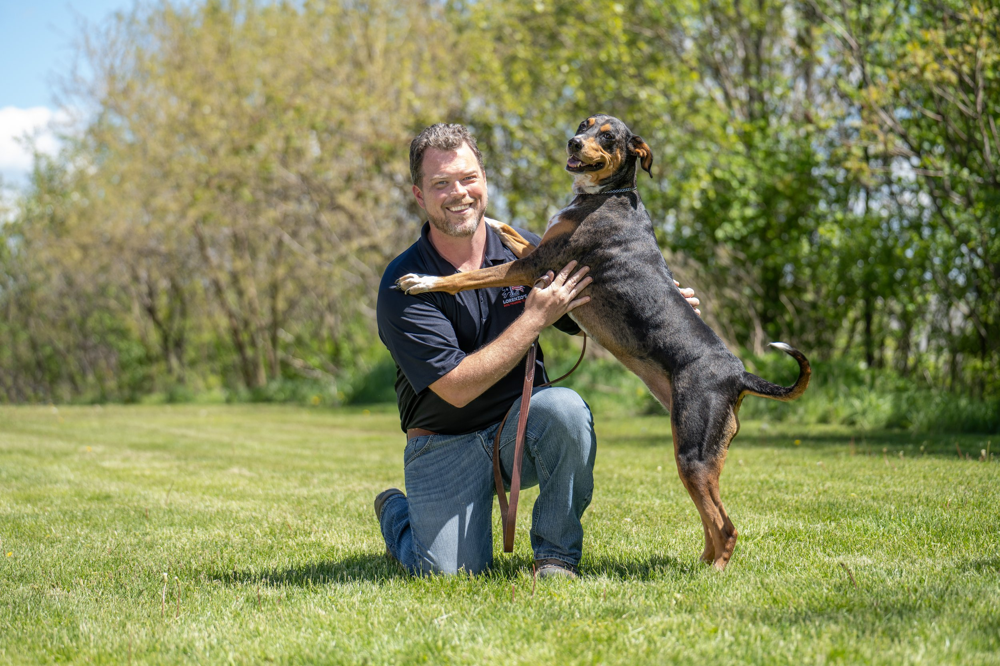

Robert Wesling
Atlanta, GA
Robert became passionate about LDTT after training his own dog, Leia, and now helps owners build stronger relationships with their dogs.

Atlanta, GA
Robert became passionate about LDTT after training his own dog, Leia, and now helps owners build stronger relationships with their dogs.
Robert Wesling ATLANTA, GA Robert Wesling was born in St. Louis, Missouri and now resides in Sandy Springs, Georgia. Dogs have always been a part of his life, but it wasn’t until he started training his own dog, Leia, that Robert realized he could only take her training so far on his own.
Then, on a recommendation from his Veterinarian, Robert contacted Lorenzo’s and he officially became a client. “After finishing my training, I was hooked, and I knew I had to follow this passion for training dogs and helping people. I look forward to continuing my education in the art of dog training through the amazing mentors here at LDTT.” Having goals is important and Robert has a few.
He’d love to buy a few acres of land, overlooking some mountains, with a small house to nap in and lots of dogs. When he’s not working, he likes to take long road trips with his dog, Leia. He also enjoys going hiking in national forests, he likes every type of barbeque, baseball, soccer, deep sea fishing, rollercoasters, and theme parks.
Send your request directly to Lorenzo's office with Robert Wesling already assigned as the source trainer.